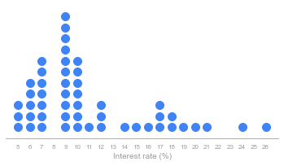
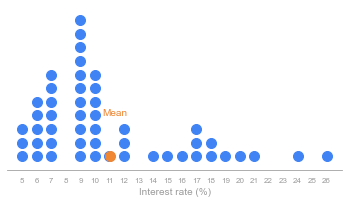
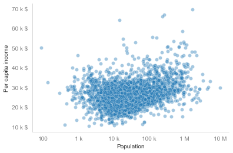

Dot plots and the mean
Contents
Dot plots and the mean#
Python setup#
# Setup
%matplotlib inline
import pandas as pd
import seaborn as sns
import matplotlib.pyplot as plt
import matplotlib.ticker as ticker
# Custom colors
blue = "#3F83F4"
blue_dark = "#062089"
blue_light = "#8DC0F6"
blue_lighter = "#BBE4FA"
grey = "#9C9C9C"
grey_dark = "#777777"
grey_light = "#B2B2B2"
orange = "#EF8733"
colors_blue = [blue, blue_light]
Import data#
ROOT = "https://raw.githubusercontent.com/kirenz/modern-statistics/main/data/"
DATA = "loan50.csv"
df = pd.read_csv(ROOT + DATA)
# We round values for our dot plot
df["interest_rate"] = df["interest_rate"].astype("int64")
Dot plot#
A dot plot of interest rate for the loan50 dataset. The rates have been rounded.
import numpy as np
# Prepara data
mean = df["interest_rate"].mean()
interest_rate = df["interest_rate"]
values, counts = np.unique(interest_rate, return_counts=True)
# Create dot plot
fig, ax = plt.subplots(figsize=(6, 3))
for value, count in zip(values, counts):
ax.plot([value]*count, list(range(count)), 'o', ms=10, linestyle='', color=blue)
for spine in ['top', 'right', 'left']:
ax.spines[spine].set_visible(False)
# Define optics
ax.yaxis.set_visible(False)
ax.set_ylim(-1, max(counts))
ax.spines['bottom'].set_color(grey)
ax.set_xticks(range(min(values), max(values)+1))
ax.tick_params(axis='x', length=0, pad=8, labelsize=8, colors=grey)
# Label and anotation
plt.xlabel("Interest rate (%)", color=grey)
plt.show();

Dot plot with mean#
# Create dot plot
fig, ax = plt.subplots(figsize=(6, 3))
for value, count in zip(values, counts):
ax.plot([value]*count, list(range(count)), 'o', ms=10, linestyle='', color=blue)
for spine in ['top', 'right', 'left']:
ax.spines[spine].set_visible(False)
# Define optics
ax.yaxis.set_visible(False)
ax.set_ylim(-1, max(counts))
ax.spines['bottom'].set_color(grey)
ax.set_xticks(range(min(values), max(values)+1))
ax.tick_params(axis='x', length=0, pad=8, labelsize=8, colors=grey)
# Label and anotation
plt.xlabel("Interest rate (%)", color=grey)
ax.plot(mean, 0, 'o', ms=10, color=orange)
ax.annotate(text='Mean', xy=(mean-0.5, 3), color=orange)
plt.show();

print(mean)
11.04
The sample mean can be calculated as the sum of the observed values divided by the number of observations:
\[ \bar{x} = \frac{x_1 + x_2 + \cdots + x_n}{n} \]
Asthma example#
Results of a trial of 1500 adults that suffer from asthma;
d= {'Description': ["Number of patients", "Total asthma attacks"], 'New drug': [500, 200], 'Standard drug': [1000, 300]}
drug_asthma = pd.DataFrame(data=d)
drug_asthma
| Description | New drug | Standard drug | |
|---|---|---|---|
| 0 | Number of patients | 500 | 1000 |
| 1 | Total asthma attacks | 200 | 300 |
# Asthma attacks per patients
new_drug = 200/500
standard_drug = 300/1000
print("New drug: 200/500 = ", new_drug, "asthma attacks per patient")
print("Standard drug: 300/1000 = ", standard_drug, "asthma attacks per patient")
New drug: 200/500 = 0.4 asthma attacks per patient
Standard drug: 300/1000 = 0.3 asthma attacks per patient
County example#
ROOT = "https://raw.githubusercontent.com/kirenz/modern-statistics/main/data/"
DATA = "county.csv"
df_county = pd.read_csv(ROOT + DATA)
sns.set_style("whitegrid", {'axes.grid' : False})
fig, ax = plt.subplots()
sns.scatterplot(data=df_county, x="pop2017", y= "per_capita_income", palette=colors_blue, alpha=0.4)
ax.set_xscale('log')
ax.yaxis.set_major_formatter('{x:1.0f} k $')
ax.yaxis.set_major_formatter(ticker.EngFormatter(' $'))
ax.yaxis.set_tick_params(which='major', labelcolor='grey', labelleft=True)
ax.xaxis.set_major_formatter(ticker.EngFormatter(''))
ax.xaxis.set_tick_params(which='major', labelcolor='grey')
plt.ylabel("Per capita income")
plt.xlabel("Population")
sns.despine()
plt.show();
